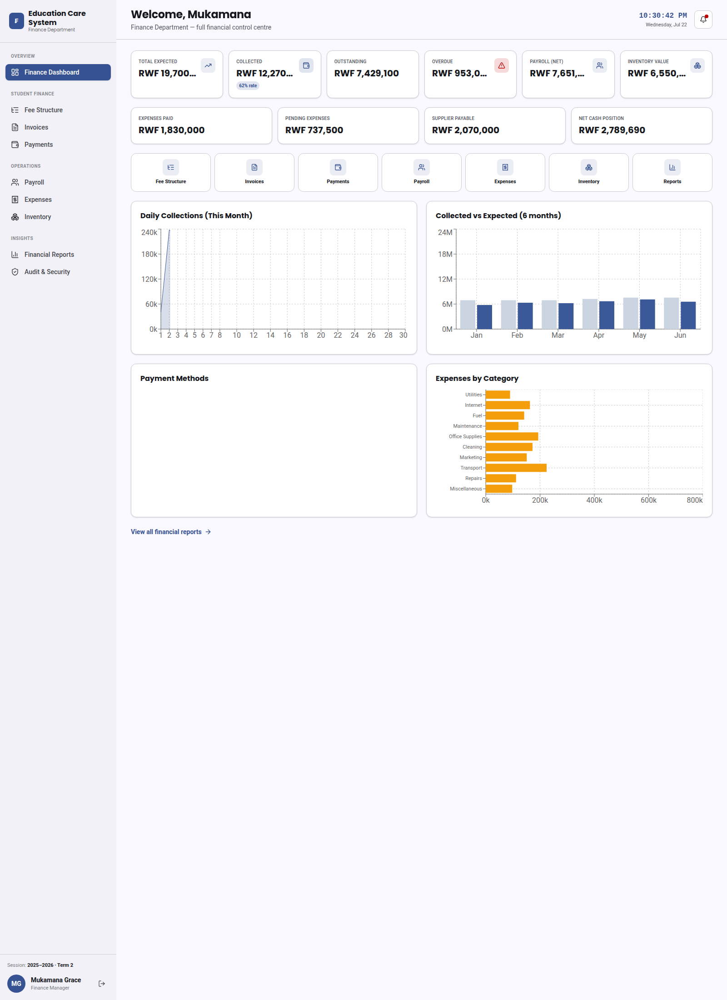
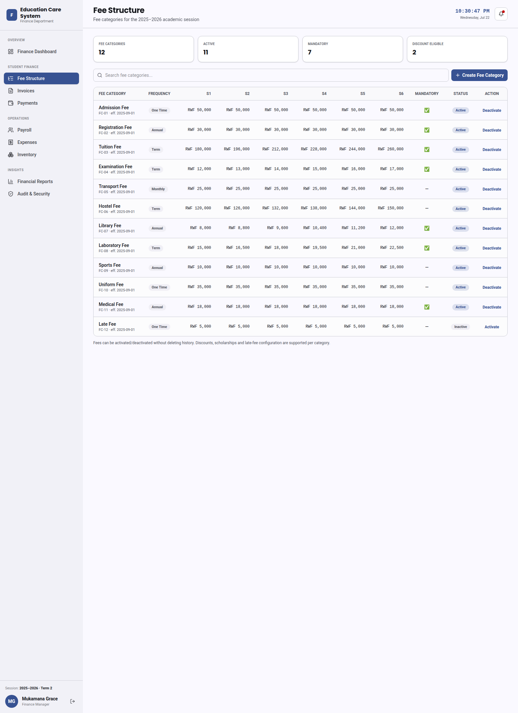
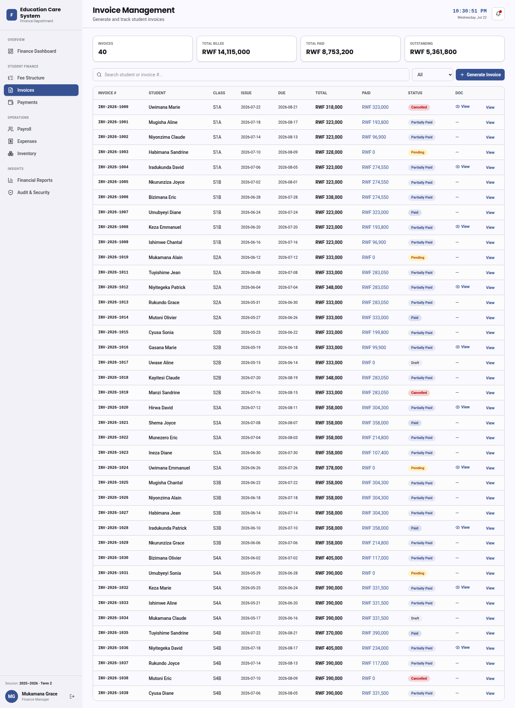
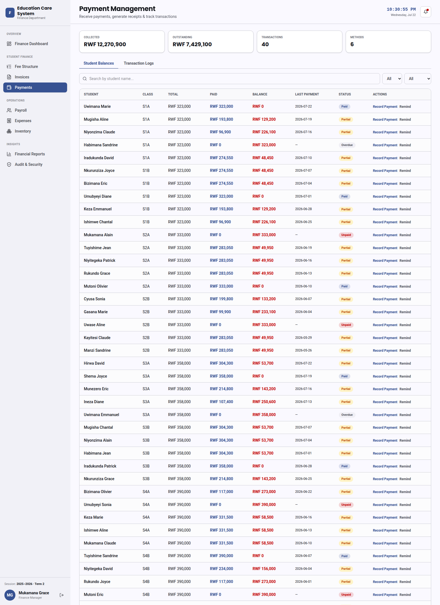
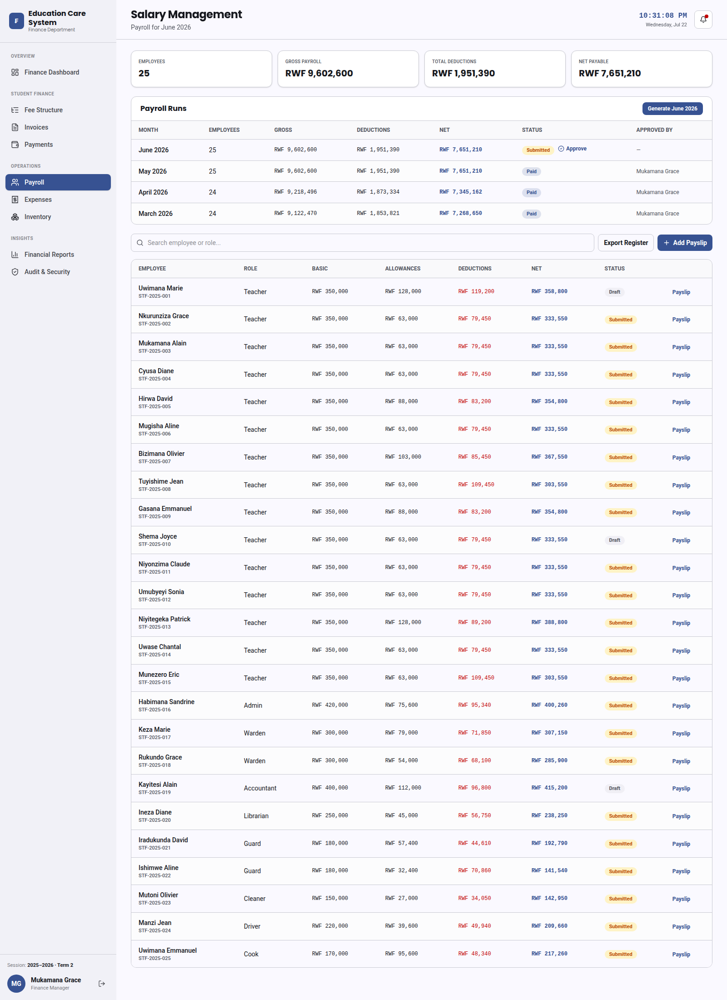
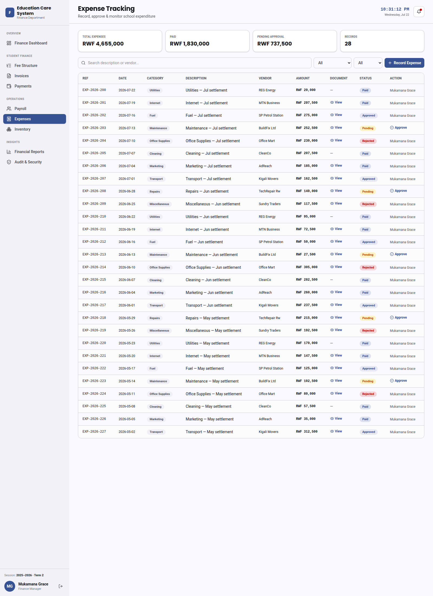
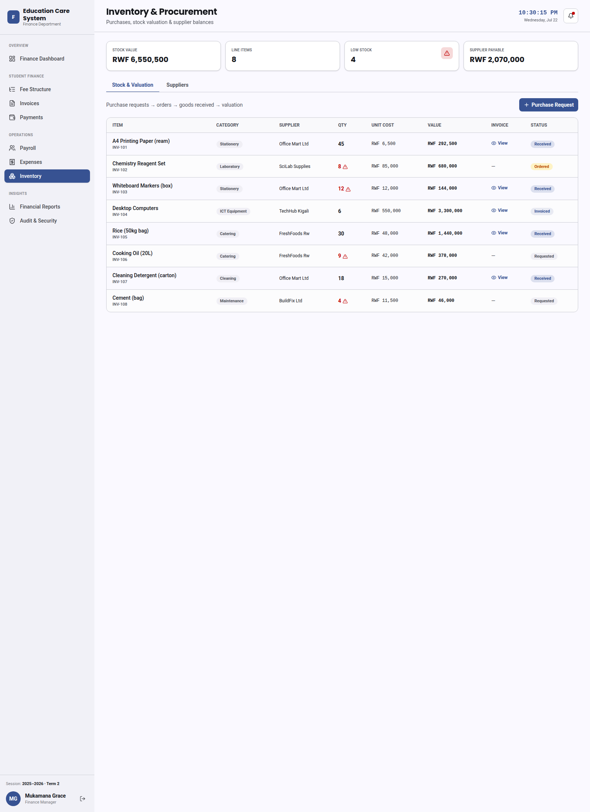
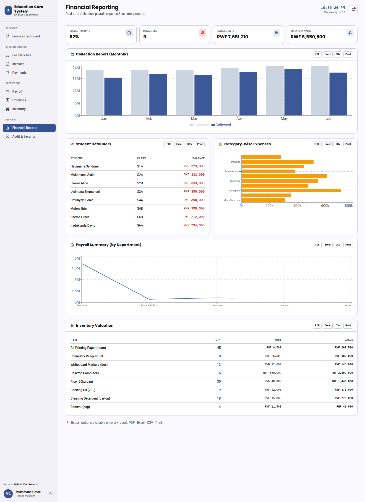
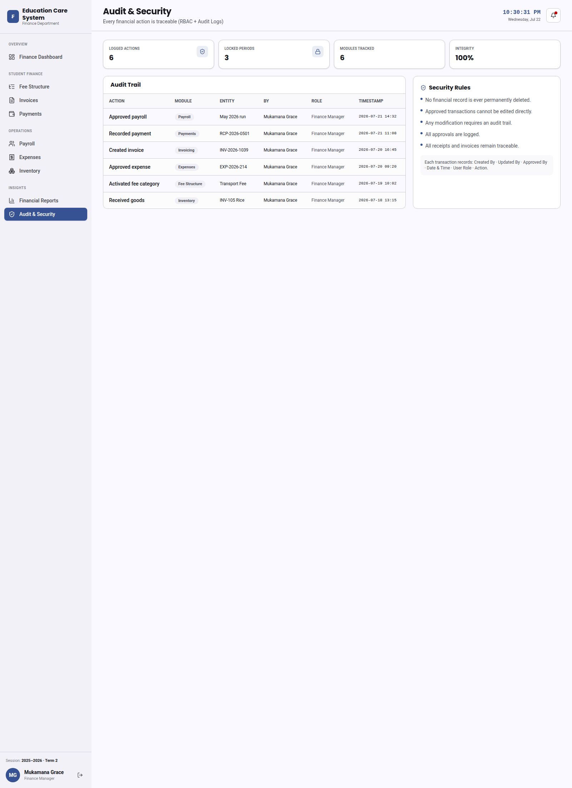

Daily Report — Finance Dashboard
Prepared by: Fabrice
Date: 22 July 2026
Summary
Today I completed the new Finance Dashboard for the school system. It is a complete
set of nine screens that let the finance team manage all the money side of the school in one
place — from setting school fees and sending invoices, to receiving payments, paying staff,
tracking expenses, managing store items, and viewing reports. Every screen is finished and
working. Screenshots of each screen are included below.
What the New Dashboard Does
1. Main Dashboard
- A single overview screen showing the school's money at a glance.
- Shows how much is expected, how much has been collected, what is still outstanding, and what is overdue.
- Shows staff salary totals, the value of items in the store, and the overall cash position.
- Includes easy charts for daily collections, monthly trends, payment methods, and spending by category.
- Quick buttons to jump to any other finance screen.

Main Dashboard
2. Fee Structure
- Set up the different types of school fees (for example tuition, transport, or meals).
- Mark which fees are required and which are optional, and how often they are charged.
- Add new fee types that apply to all classes.

Fee Structure
3. Invoices
- Create and send invoices to students based on the fees they need to pay.
- View each invoice with a clear breakdown of every fee and the total amount.

Invoices
4. Payments
- Receive payments from students and parents.
- Generate receipts and keep track of all transactions.

Payments
5. Salaries
- Manage staff salaries and prepare pay slips.

Salaries
6. Expenses
- Record and monitor money the school spends.
- New expenses wait for approval by the finance manager before they are confirmed.

Expenses
7. Inventory & Store
- Track purchases, the value of items in the store, and how much is owed to suppliers.
- Create new purchase requests and add suppliers.

Inventory & Store
8. Reports
- See clear reports on collections, salaries, expenses, and store value.
- Includes a list of students who still owe money and a breakdown of spending.

Reports
9. Audit & Security
- Keeps a record of every money-related action so nothing goes untracked.

Audit & Security
Conclusion
The full Finance Dashboard is complete and ready to review. All nine screens work together to
give the school one simple place to manage fees, payments, salaries, expenses, store items,
and reports.